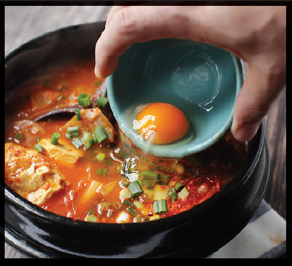

KOREAN SOFT TOFU AND KIMCHI SOUP (KIMCHI SOONDUBU JJIGAE)
|
Yield Serves 4 to 6 |
Active Time 15 minutes Total Time 30 minutes |
The broth for this soup is typically made with sea kelp (kombu) and dried anchovies. You can make a dashi with those two ingredients (here) or just use whatever dashi you’d like. I like adding kimchi to the soup, though it’s not a necessary ingredient. Kimchi contains probiotics and will continue to ferment in your fridge after you buy it, eventually gaining a bubbly effervescence. That bubbly, extra-sour kimchi is perfect for this dish. Other good additions are several ounces of daikon radish cut into small cubes, whole enoki or beech mushrooms, cockles, clams, or shrimp. Any additions should be added with the dashi in step 3 and simmered just until cooked through (about 15 minutes for radish or 2 to 3 minutes for mushrooms and shellfish). If you use a mushroom-based vegan dashi (here) and a vegan kimchi (check the label; most kimchi is made with anchovies—vegan kimchi will typically be labeled as such on the front of the container), the dish is entirely vegan.
INGREDIENTS
1 cup (225 g) very fermented kimchi with juice (optional; see Notes)
1 tablespoon (15 ml) vegetable oil
6 scallions, cut into 1-inch segments
1 tablespoon (8 g) minced garlic (about 4 medium cloves)
2 tablespoons (30 g) gochujang
1 tablespoon (15 ml) light soy sauce, plus more to taste
3 tablespoons (20 g) gochugaru (Korean chile flakes), more or less to taste
1 quart (1 l) dashi (see Notes)
1½ pounds (680 g) soft tofu, preferably Korean soondubu
1 large egg per serving (optional)
A mainstay of the Korean table, jjigae literally translates as “stew,” and there are hundreds of common varieties. When I have a cold, there are few things I crave more than a steaming hot bowl of soondubu jjigae—soft tofu stew. I grew up right across the George Washington Bridge from Palisades Park, the municipality that, with a full 52 percent of its residents being of Korean descent, represents the most concentrated Korean population in the country. I made it a habit to make the trek across the bridge to nearby Fort Lee for soondubu jjigae from Soft Tofu Restaurant (that’s really its name—although it also goes by its Korean name, So Kong Dong) whenever the weather got cold or I started to feel a bit of a sniffle coming on.
Flavored with pork, beef, mushrooms, or seafood in a broth similar to a Japanese dashi flavored with sea kelp and dried anchovies, it’s laced with gochugaru (Korean chile flakes) and fermented gochujang (chile wheat paste). The bulk of the dish is made up of tofu of the softest silken variety, which develops an ultra-creamy, smooth texture as it heats in the boiling-hot broth. This version features chunks of daikon radish, mushrooms, scallions, and soft tofu in a dashi-style broth. Soondubu jjigae is typically made in a stone bowl called a dolsot, but your wok will do an excellent job here. Sinus clearing, nutritious, and easy to down by the dolsotful, it’s perfect restorative fare.
DIRECTIONS
1 If using kimchi, drain the kimchi in a fine-mesh strainer set over a small bowl, squeezing to remove as much liquid as possible. Roughly chop the kimchi and reserve the kimchi and juice separately.
2 Heat the oil in a wok, stone dolsot, or saucepan over medium-high heat until shimmering. Add the scallions, garlic, and chopped kimchi (if using). Cook, stirring constantly, until fragrant, about 1 minute.
3 Add the kimchi juice (if using), gochujang, and soy sauce. Cook until the vegetables are well coated in an even layer of sauce. Add the gochugaru and dashi. Bring to a simmer and cook until the daikon is tender, about 15 minutes.
4 Add the tofu and scallion greens, stir gently, and heat until boiling. Season to taste with more gochugaru or soy sauce if desired. Break the eggs directly into the simmering broth. You can stir the egg in to make a richer soup or let them loosely poach in the broth, carefully doling out one poached egg per serving.
